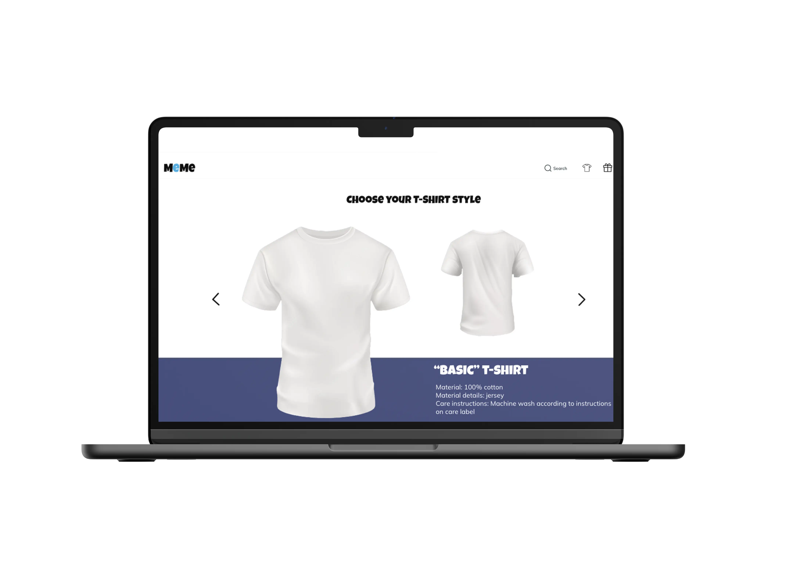

I grunnlæggende UX lærte jeg enda mer om hvordan en multimediedesigner jobber på. Jeg ble introdusert til processen med å designe opplevelsen. Først og fremst lærte jeg om UX research. Det er viktig å forstå kundens mål og deretter undersøke hvem er brukeren, definere målgruppen, atferd og motivasjon. Det er også viktig å undersøke konkurrenter, slik at vi kan få innblikk i hva vi kan gjøre annerledes. Med andre ord vil vi forstå user behaviors, user needs og user motivation. Jeg brukte kvantitativ og kvalitativ data i form av et intervju og observasjoner til å forstå og bekrefte hva brukeren er ute etter og på denne måten komme i gang med mitt konsept.
Min oppgave handlet om å forstå brukeres behov og lage en løsning som var intuitiv og tilgjengelig. Det var også viktig å skape en design som vil understøtte budskapet og være brukervennlig.
Jeg lagde moodboard og styletile før jeg kom i gang med prototyping. Jeg lagde skitser og så på andre websites som solgte t-shirts. Jeg produserte copy, microcopy og bilder til mitt konsept og website. Etter at prototype ble ferdig, utførte jeg tenke høyt-test som hjalp meg å forbedre både design og brukervennlighet.
LØSNING
TEMA: MEME T-SHIRTS
